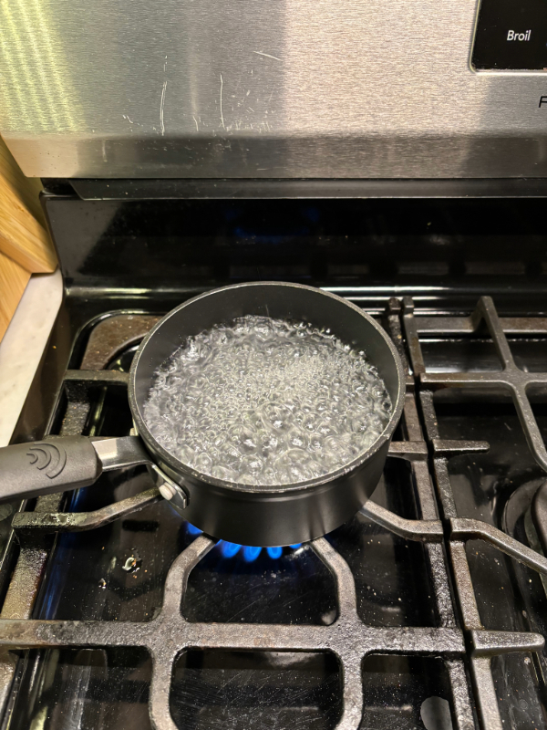
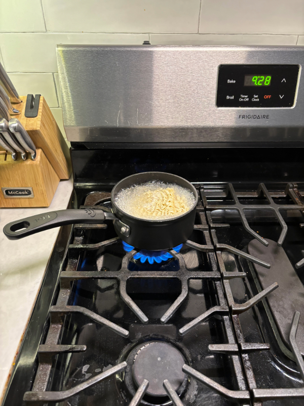
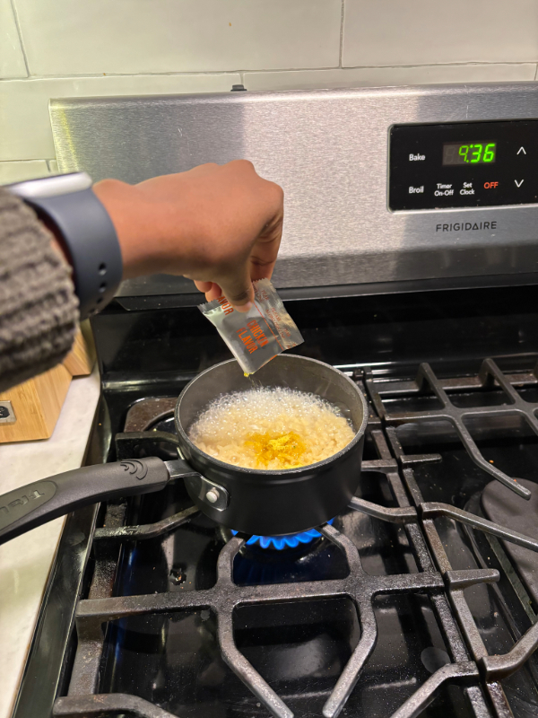
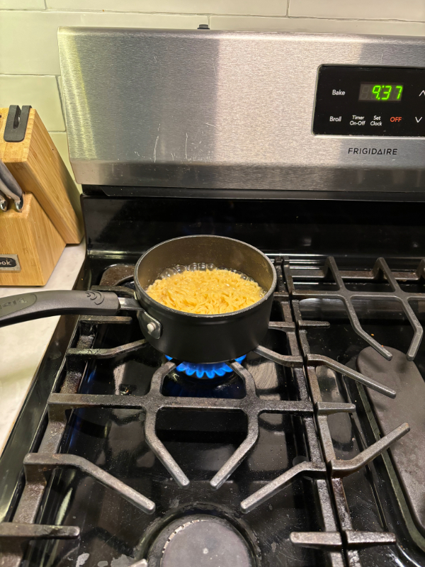
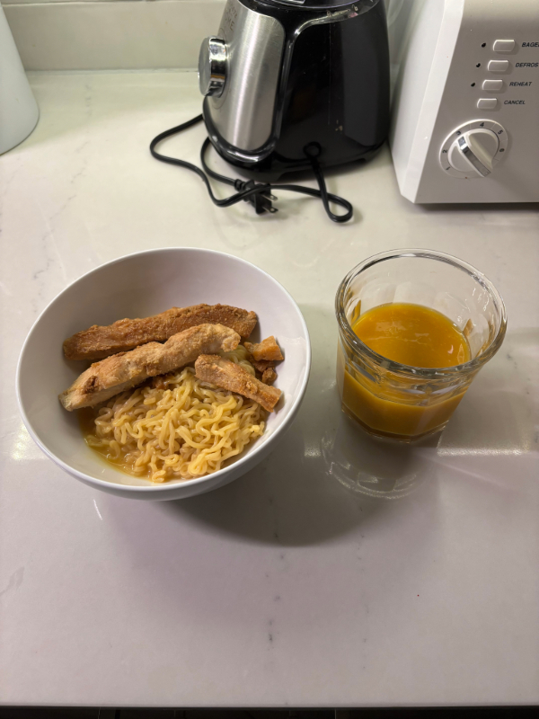

How to make a pot of noodles in less than 5 minutes
by Vicky Kimani
1. Boil two cups of water in a pot

Make sure the water completely boils.
2. Add your ramen to the pot of boiling water

Don't forget to remove the seasoning packet!
3. Add seasoning

Add seasoning to your ramen. You can also choose not to add the entire packet, according to your preference.
4. Stir 4-6 times

Stir until all the season is well distributed, leave the ramen to boil for a couple of seconds.
5. Serve

Serve while hot. Enjoy your meal!